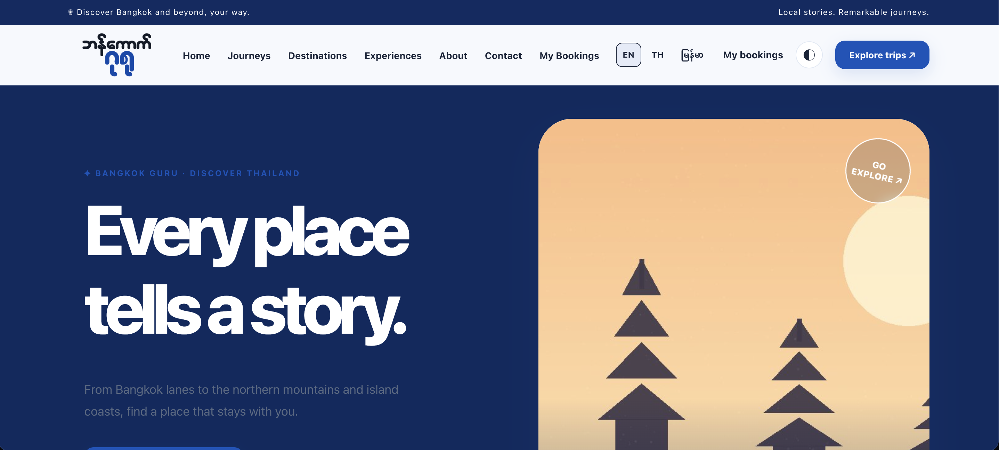
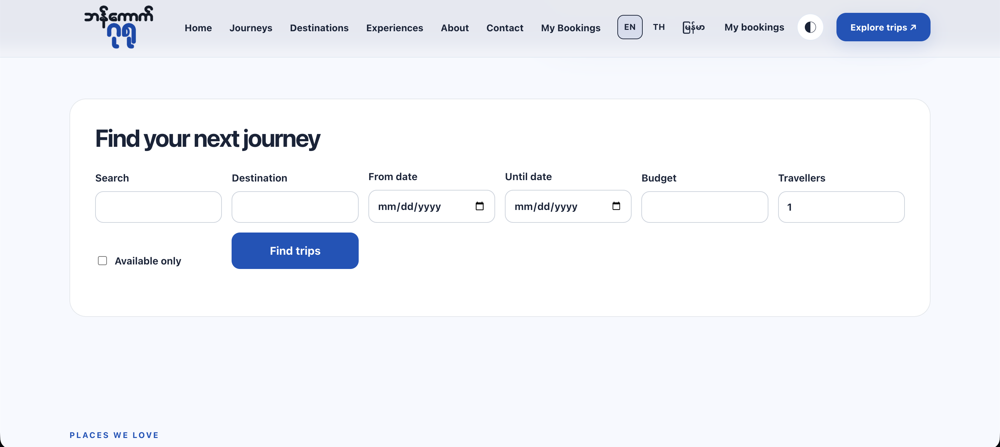
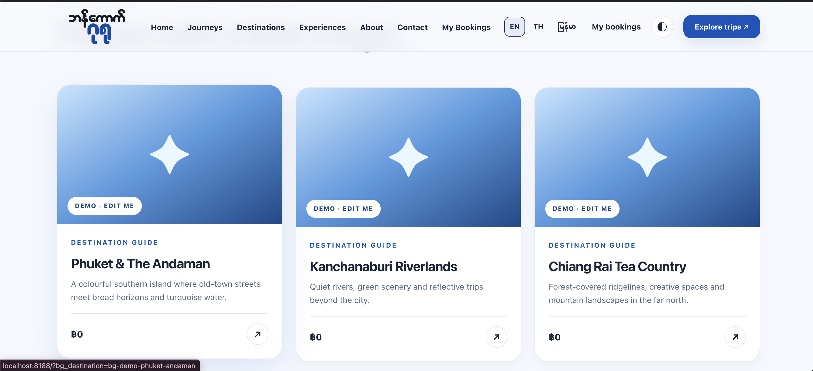
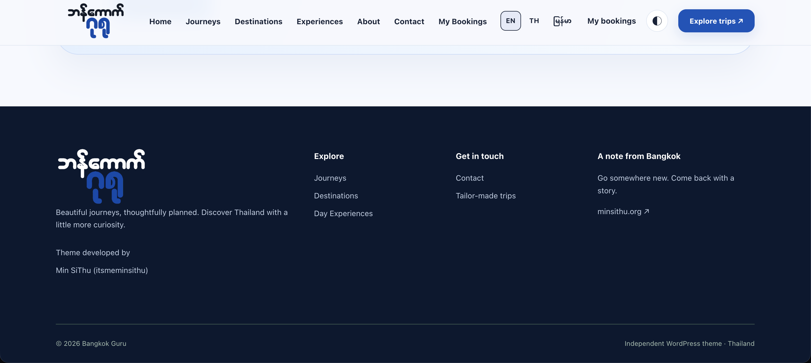

For WordPress users: download the two release files, upload them in WordPress admin, theme first, then plugin. No Git or code needed.
Download v0.13.0 release View source on GitHub
Download v0.13.0 release View source on GitHub
Home

Find your next journey

Places we love

Footer

Install on WordPress (v0.13.0)
- Download
Bangkok-Guru-WordPress-Theme-v0.13.0.zipfrom the release. - WordPress admin → Appearance → Themes → Add New → Upload Theme → Activate.
- Download
Bangkok-Guru-Bookings-Plugin-v0.13.0.zipfrom the same release. - WordPress admin → Plugins → Add New → Upload Plugin → Activate.
- Follow the demo import prompt, or go to Appearance → Bangkok Guru Setup.
Status: Developer / user-testing beta. Not certified for live payment processing. Theme developed by Min SiThu (itsmeminsithu) · minsithu.org